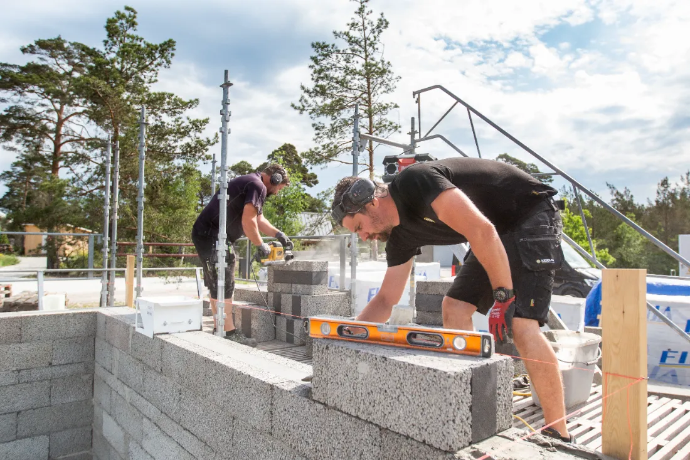

GOTLÄNDSKT HANTVERK SEDAN 1991
Byggt på erfarenhet.
Drivet av människor.
Kibba Nysell startade företaget 1991. I dag möts många hantverkskompetenser under namnet Kibbas.

En idé som
lever vidare.
Lyssna på kunden. Var noggrann. Kom i tid och lämna ordning efter dig.
Det var viktiga utgångspunkter när Kibbas grundades och de följer fortfarande med in i arbetet. Hos oss möts erfarenhet av små snickerier och större byggprojekt.
Kontakta vårt teamOmtanke om
mer än bygget.
Arbetsmiljö, resurser och lokalt engagemang är delar av verksamheten.
Second Chance ger material en ny användning. Företaget beskriver också sitt stöd till gotländsk idrott och friskvård för medarbetarna.
Kvalitet & miljö